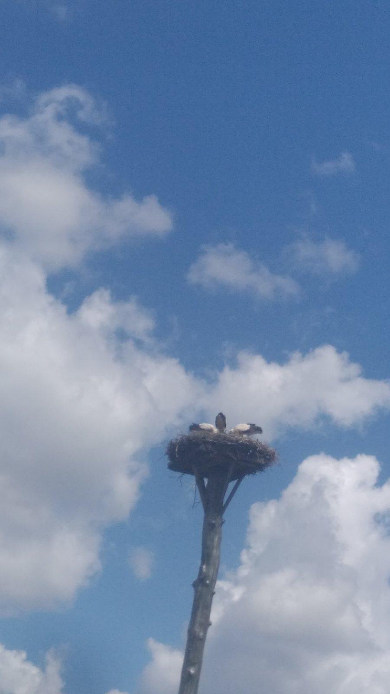

Мої менші друзі!
Привіт! Мені подобаються комп'ютери і технології,
але крім цього я люблю природу і тварин...
Раніше я жила тільки в містах і містечках. Взимку 2014р., завдяки придуркуватим сусідам з оркостану, всі плани на найближчі 5 років були зруйновані (планувалося будівництво та реконструкції в Криму). Переїхала на дачу, на хутір. Зайнялась реконструкцією того, що мала. Таким чином я майже постійно перебувала там. А раз постійно, то і варто завести хозяйство.
Так як я абсолютний новачок у триманні хозяйства, то логічно, що хотіла почати з найлегшого - кури! Але сталося, не так як гадалося...
Мої "квартирні" тварини
До того, як завести хозяйство, я мала досвід тільки зі звичайними песиками, котиками, попугою.
-
Собачки
Моя перша собачка з'явилась у мене ще у 1991р. Чудова дівчинка Дені. Була зі мною 11,4 роки. Коли вона "пішла" було дуже тяжко. Заріклась, що більше ніколи нікого не заведу. Але сталося, не так як гадалося... Через місяць з'явився хлопчик Умка, а щоб йому було не скучно пізніше з'явилася Маруся. Умчик був з нами 17 років. Коли він "пішов" Маруся впала у депресію і щоб вивести її з того стану, у неї з'явився друг Біллі. Ця парочка досі разом!
-
Котики
У дитинстві, майже у всїх моїх подружок були котики. Мені подобалось з ними побавитись, але ніколи не було навіть думки мати котика. Але сталося, не так як гадалося... замітка №1
-
Попуга
В 2006р. у нас з'явився попуга Арончик. Розумний, кмітливий. Любив дивитися канали National Geographic, Discovery та інші. Наслухається мавп, слонів, пташок різних і навіть китів, а потім тиждень їх відтворює. На дачі завів собі друзів, пташок розміром з голуба, у крапочку. Схожі на зозулю але інакші. Коли я вивозила його на вулицю, у гарну погоду, ті пташки завжди до нього прилітали. Гарний був хлопчик. На жаль сталася трагедія. На той час Арончику було 10 років.
Мої "хуторські" тварини
Це перелік тварин яких я мала у період з 2014 по 2024р. На сьогодні, поки що, кури і овечки.
-
Кури
-
Качки
-
Порода:
Мулард
-
Гуси
Овечки
-
Кози
замітка №2 -
Поросята
-
Порода:
В'єтнамські
-
Корови
-
Індики
-
Порода:
Біг-6
-
Кролі
Мій ексклюзив!
Лелеки
Є в мене по центру дачі одне цікаве місце! Велика гранитна брила, яка місцями стирчить з землі. Там не можна посадити сад, розвести город, щось збудувати. Можливо тільки квіти та травичка, що полюбляють рости на камінні. У центрі тієї брили велика розщілина. Подивилась, подивалась і винесла вердикт: тут будуть Лелелки!!! Хто рядом стояв тільки пальцем покрутили. Пройшло 7 років і нарешті я знайшла стовбур для майбутніх лелек. Сплела їм гніздо 1,20м х 1,20м. Це було ще те заняття: гілки велики, гілки середні, гілки тоненьки, та все це змащено 2 ведрами гнію (рос. "навоз") щоб їм було тепло. Гілки можно використовувати тільки старі, якщо з лишаєм або наче у пометі то ще краще - вапном імітувала ті сліди... Все це прикрутили, зробили помост, майже день заливали бетоном і через місяць нарешті приїхав кран і все поставив на місце. Пройшло ще 3 роки і нарешті прилетів лелека!!! Він був одинак. Ціле літо кудись улітав, прилітав. Коли в серпні він полетів на зимовку, за 2-3 дні прилітали інші лелеки, відпочивали і рушали далі. Прийшла весна, а з весною прилетіла пара: він і вона! Такі красені! І так близько, це щось неймовірно! В перший і другий рік вони привели по 2 лелечинята, а в минулому році 3 лелеченят! Карл! 3 лелеченят!!!... я їх обожнюю і з нетерпінням чекаю нової зустрічі!
